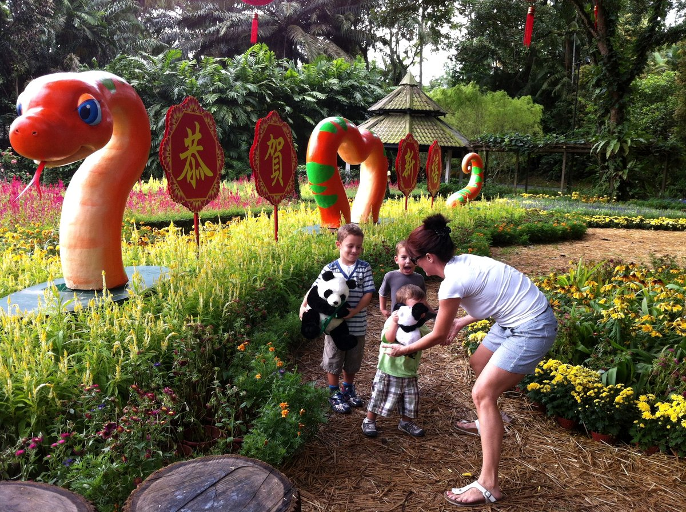
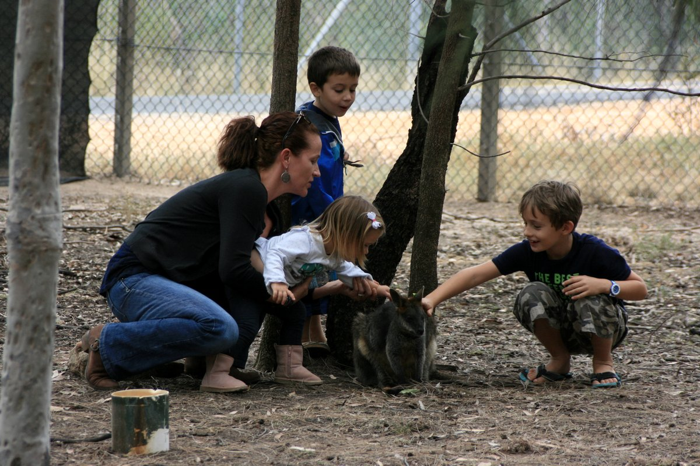
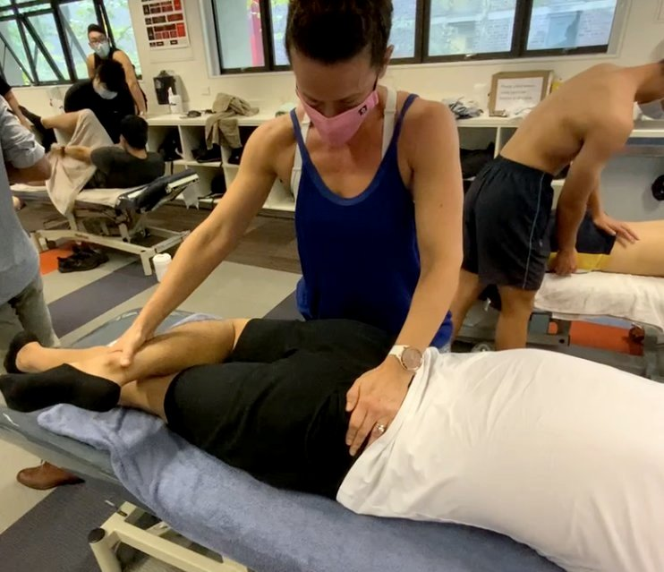

Founder & Lead Strategist
25+ years building, scaling, and rebuilding businesses across four continents.
📍 Mequon, Wisconsin
I built AG45 because I needed it. Owners building real businesses — the kind PE firms eventually buy — need board-level discipline and the right people at the table. Most of them don't have it.
I've spent more than 25 years as an operator, advisor, and strategist across the U.S., the U.K., Asia Pacific, and Australia. My strength is discernment through chaos and change — knowing what's actually happening underneath the noise, and knowing who needs to be at the table to do something about it.
I've worked inside global finance. I've run a consulting firm in Singapore through the 2008 crisis. I've raised four kids and started over more than once. I've also let a business fold that should have been gold — because I didn't have the right people around me when it mattered. That's the lesson AG45 was built on.
The path
I came up through university and the hospitality industry, leading and managing people from the front line. That's where I learned what actually matters in a business — how customers feel, how staff feel, who decides what gets fixed when something breaks.
That's where I started seeing how ownership really works — and what most owners miss.
I worked at Goldman Sachs in London in Equity Research — but my role was on the cultural side. I supported the firm through changes in how they hired, led, and worked. From the inside of one of the most demanding institutions in global finance, I watched what it takes to build and rebuild the systems that make high-performance work actually work.
Most of what I know about leadership architecture, I learned by watching Goldman do it at scale.
By 2004 I'd relocated to Singapore and launched my own consulting firm. The work spanned the region — and the spectrum. Investment banks, large conglomerates, wealth management firms, and small businesses navigating leadership, organizational change, commerciality, and strategy.
Singapore is where I learned the fundamentals don't change with size. A 50-person business and a 50,000-person business face the same questions: who's at the table, how they lead, what they're actually building. Only the scale of the answer changes.

Singapore — Chinese New Year with the boys.
Your business can have the best strategy and the cleanest growth plan, and external circumstances will still force a pivot. The more strategic and aligned you already are, the more likely that pivot succeeds. Mine did.
When the global financial crisis hit, the consulting model had to change. I pivoted by pioneering one of the region's first blended online learning platforms — combining live strategic work with scalable digital infrastructure.
As video was just emerging as a learning medium, I partnered with the founders of an early-stage graduate recruitment platform. Their build was recruitment. Mine was the professional learning layer underneath it — graduate development, delivered through video at a moment when almost no one was doing it.
Both got off the ground. Neither survived.
Great ideas don't always make great businesses. The recruitment side and the learning side never merged into the integrated thing they should have been. And I overcommitted — too much on my plate, not enough discipline about which fights actually mattered.
What I learned then is exactly what I now help owners avoid: the difference between a strategy that's exciting and a strategy that's actually executable. Brilliant doesn't beat focused.
In 2016 I moved with my family to Australia. The first year I was raising four small children largely on my own.

Australia — with three of the four.
I stepped back from running a firm — and eventually closed the business down.
That's the one I should have kept.
If I'd held it through COVID and sold it on the other side, it would have been quite fruitful. I didn't. The reason wasn't strategy or capability — it was that I didn't have the right advisors at my table. I made the call alone. Closing it was the right answer to the wrong question.
What I did next mattered. I'd spent years studying behavior and the mind, and the body was the last piece of the system I wanted to understand. So I started an undergraduate degree in chiropractic medicine — the spine is the communication channel to the body, and I wanted to know how that engineering actually worked. I kept my mind busy, kept building. I loved it.

Australia — chiropractic clinical practice.
Then COVID hit. I stopped the degree and returned to consulting — this time in financial services remediation. The kind of work that teaches you how institutions actually fail and how they actually rebuild.
I came back to the U.S. in 2023 with one thing settled: the next thing I built would solve the problem that cost me the last one.
AG45 is for the owners I respect most — the ones building real businesses who want a real choice when the time comes. The methodology is half the work. The other half is the room — the right people at the right altitude, at the table when it counts.
That's the firm I built.
Why this works
Every advisor talks about strategy. Most have never sat in the operator's seat. I have — across continents, across crises, across rebuilds.
That's the difference.
Connect
Take the True Owner's Audit to see where you are across the 5A Framework. Or schedule a discovery call to talk through whether AG45 is the right fit for the work ahead.